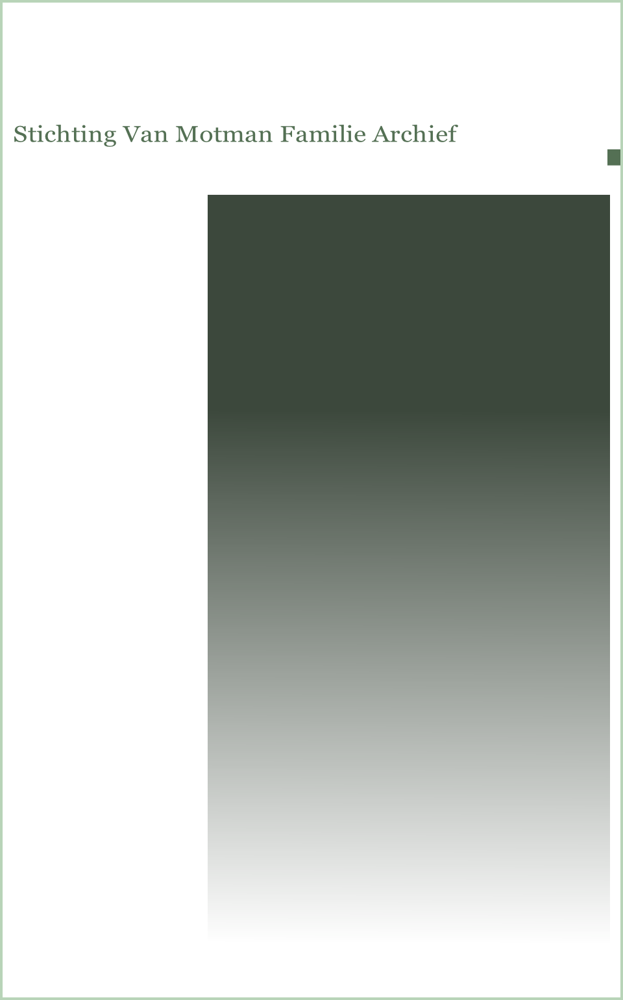
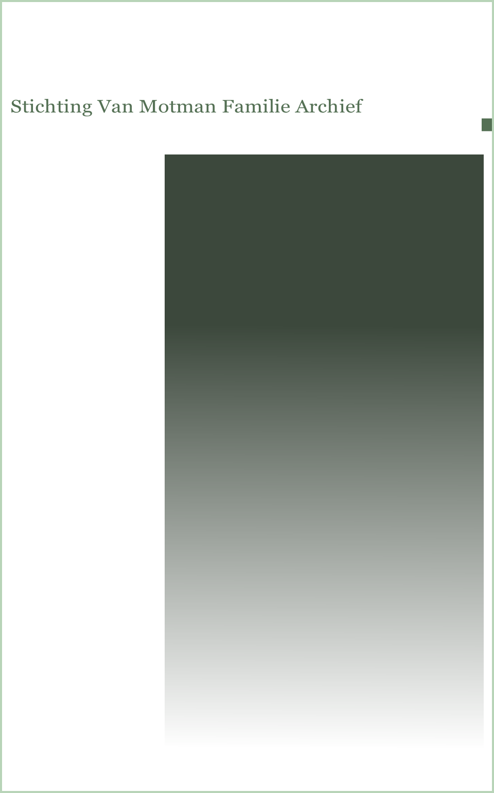

Tak B:
Frederik Hendrik Constant van Motman
Frederik Hendrik Constant was geboren te Pondok Gedeh op 21 juli 1809, gestorven op het land Tadjoer (Buitenzorg) op 19 september 1889 en is begraven op de familiebegraafplaats te Djamboe. Hij trouwde op 11 augustus 1833 met Sophia Maria, geboren op 22 februari 1815 dochter van de vrije onchristenvrouw Mientje van Mandhaar geadopteerd door Petrus Wilhelmus van Riemsdijk en diens vrouw Sophia Cornelia Bangeman. Zij stierf op 2 april 1888 te Batavia en werd een dag later op Tanahabang begraven.
Vóór zijn huwelijk had hij twee kinderen en gedurende zijn huwelijk nog een kind bij de Chinese vrouw Tan Nieo, bij de doop genaamd Wilhelmina en gestorven te buitenzorg op 5 maart 1900 oud 96 jaar en begraven op Djamboe. Tijdens zijn huwelijk had hij ook twee kinderen bij Tan Kang Nio, waarvan één door zijn broer Willem Reinier werd geadopteerd en één in het huis van zijn broer Pieter Cornelis werd opgevoed.
Van Motman zonder champagne is Nederland zonder Oranje
Aan het hoofd van deze tak staat de kleurrijkste figuur met het meest uitgebreide nageslacht, zo kan men Frederik Hendrik Constant van Motman misschien het beste typeren. Hij stond in zijn tijd bekend als een bon vivant en rokkenjager. Tijdens zijn huwelijk met veel kinderen verwekte hij bij twee andere vrouwen nog drie kinderen.
Een van zijn hobby’s was de jacht op groot wild. Hij was lid van de Nimrodclub, een exclusief jachtgezelschap. Het is zeer waarschijnlijk aan zijn levenswijze te danken, dat de slogan “Van Motman zonder champagne is Nederland zonder Oranje” ontstond. FHC was ridder in de Orde van de Nederlandse Leeuw en landheer/eigenaar van de landen Semplak, Tjikandi Oedik en Kedong Badak; in 1846 was hij lid van de vrijmetselaarsloge “Ster in het Oosten” in Batavia. Hij heeft de regering veel diensten bewezen, zo sloeg hij de opstand op het land van Tjikandi neer.
Van de erven van Willem Vincent Helvetius van Riemsdijk huurde hij het land Tjampea c.a. dat wil zeggen Tjampea, Tjiboenboelan en Sadeng Oost; vanaf 1882 bedroeg de huur fl. 202.000,-- per jaar. In verband met betalingsmoeilijkheden werd de huur over 1886 en 1887 verlaagd tot fl. 150.000,-- en werd de huur per 1 januari 1888 beëindigd. Volgens een familie-aantekening werd zijn graf door de bevolking heilig verklaard. In de jappentijd is het graf gerampokt en verloren gegaan.
Kinderen
FHC trouwde op 24-jarige leeftijd met de 18-jarige Sophia Maria van Riemsdijk, een adoptiefdochter van Pieter W.H., en Sophia Cornelia Bangeman, een zuster van zijn moeder. Zij kregen samen negen kinderen. Bij andere vrouwen had FHC echter ook kinderen. Vóór zijn huwelijk kreeg hij een zoon en een dochter uit een verbintenis met de vijf oudere Tan Nieo en 20 jaar later -tijdens zijn huwelijk- nog een zoon van haar. Deze kon wegens buitenechtelijkheid niet worden erkend, maar heeft wel altijd de naam Van Motman gedragen. Verder had hij nog een zoon en een dochter uit een verbintenis met Tan Kang Nio, eveneens geboren tijdens zijn huwelijk met Sophia, Deze groeiden op bij broers van FHC. Om door de het bos de bomen te kunnen zien volgt hier een rangschikking in chronologische volgorde, eerst van de zes dochters:
• Frederika Constantina, geboren in 1831 te Djamboe uit Tan Nieo, trouwde met Pieter J.F. ten Cate en had zeven kinderen;
• Sophia Maria, geboren in 1834 te Buitenzorg, trouwde met Pieter J. Mess en had 12 kinderen:
• Jacoba Maria, geboren in 1839 in Buitenzorg, trouwde met Folkert J. ten Cate, broer van Pieter J.F., en had geen kinderen;
• Carolina Catharina, geboren in 1842 te Dramaga, trouwde met haar neef GWC van tak A en had 11 kinderen;
• Cornelia Charlotte, geboren in 1844 te Nanggoeng in 1844 uit Tan Kang Nio, geadopteerd door Willem Reinier van tak A. Zij trouwde met Erland Th. Van Bronckhorst en had geen kinderen:
• Henriette Dorothea, geboren in 1848 te Dramaga, trouwde Albertus J. van Bronckhorst, broer van Erland, en had acht kinderen.
Van de zes meisjes hadden er twee geen kinderen maar de overige vier hadden samen liefst 38 kinderen. Wat verder opvalt is dat twee meisjes met een Ten Cate en twee met een Van Bronckhorst trouwden. Vervolgens van de acht zonen:
• Willem Reinier jr, geboren in 1833 uit Tan Nieo, had een relatie met Rowena en slechts één zoon, die jong overleed;
• Jacob Gerrit Theodoor, geboren in 1844 in Dramaga, trouwde met Ida en had vijf kinderen, waarvan twee zonen, die mannelijk nageslacht hadden; gerangschikt onder tak B1;
• Hendrik Pieter, geboren in 1846 in Nanggoeng uit Tan Kang Nio, trouwde met Theodora E. Schiff en had zes kinderen, gerangschikt onder tak E omdat hij opgevoed werd door Pieter Cornelis;
• Reinier Jacob, geboren in 1846 te Dramaga, trouwde met Johanna A. Leidelmeyer en had 13 kinderen waarvan 5 zonen met mannelijk nageslacht gerangschikt onder tak B2;
• Cornelis Frederik Johan, geboren in 1851 te Dramaga, trouwde met zijn nicht Geertruida Wilhelmina van tak D, had drie kinderen, waarvan één zoon met mannelijk nageslacht: gerangschikt onder tak B 3;
• Charles Constant Theodoor, geboren in 1853 te Batavia, trouwde met Josephine M. Leidelmeyer, een zus van Johanna A., had acht kinderen, waarvan één zoon met mannelijk nageslacht; gerangschikt onder tak B4;
• Frederik Hendrik, geboren in 1851 te Buitenzorg uit Tan Nieo, had zes kinderen, waarvan twee zonen met mannelijk nageslacht; gerangschikt onder tak B5;
• Frederik Herman Johan, geboren in 1856 te Batavia, kinderloos overleden vóór 2 april 1888.
Opmerkelijk is dat vijf kinderen in de periode 1842 tot 1851 op Dramaga zijn geboren, bij oma thuis dus. En dat twee broers met twee zusjes Leidelmeyer trouwden.